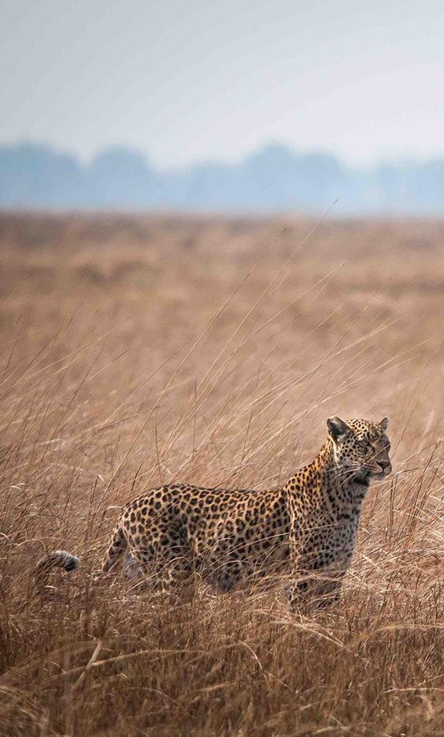
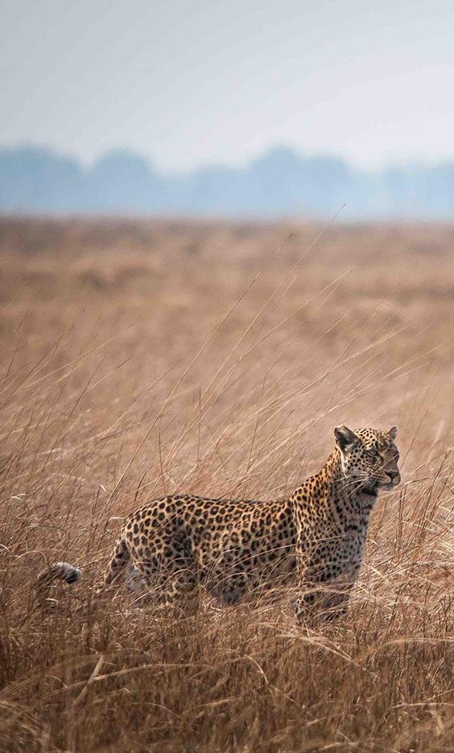

.png)
WHAT IS MWIHOKO CONSERVANCY
Conservancy is a 58,000acres private wildlife conservancy in Ruiru,Kenya.We focus on wildlife conservation by providing a safe habitat for indigenous and critically endangered species. We work closely with surrounding communities to asssist them so they can derive support and benefits from our conservation work.
 


WHO IS MWIHOKO CONSERVANCY
Behind Mwihoko Conservancy is a team of almost 300 passionate individuals,assisting us in a multitude of ways in order to allow us to deliver the best results posssible within our mission.
WHERE IS MWIHOKO CONSERVANCY
Mwihoko Conservancy is situated 120km north of Nairobi, in a malaria-free zone at about 6,000 feet of altitude on the Laikipia plateau near Mount Kenya.
MWIHOKO CONSERVANCY VISION
Mwihoko Conservancy aims to be a leading model for private conservation. We strive to set the highest standard of what can be achieved in today's conservation efforts, relentlessly pioneering new systems and methods to help succeed in our goals.
Veterinary Clinic
Learn moreIn 1999, Mwihoko Conservancy opened a world class Veterinary clinic to enable efficient medical support to injured wildlife.
MWIHOKO CONSERVANCY IMPACT AND ACHIEVEMENTS
With an ipmressive Wildlife Rescue Center and state of the art Veterinary Clinic that services the whole of Ruiru region.We are able to support the rescue, recovery, and rehabilitation of local wildlife when needed. Around this, we have developed a strong and lastinf relationship with our neigbouring comunities who are able to benefit in a multitude of different ways from our presence and the work we carry out.